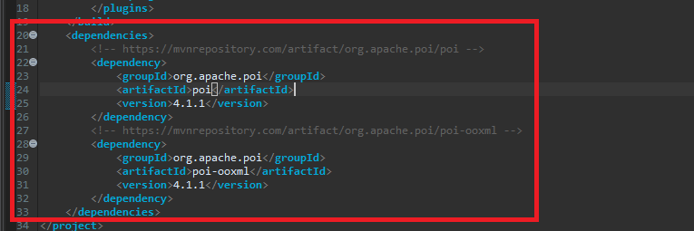
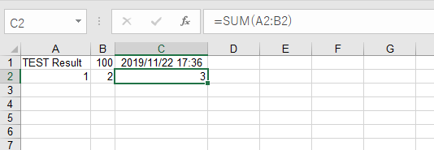
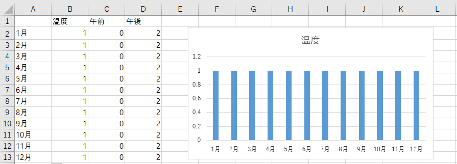
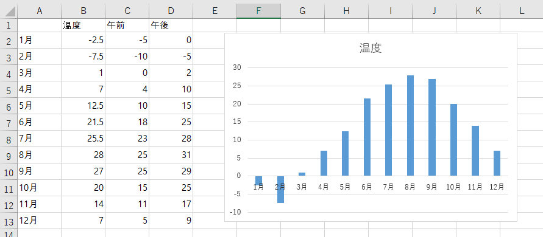

[Java] POIを利用してExcelを扱う方法
こんにちは。明月です。
この投稿はJavaでPOIを利用してExcelを扱う方法に関する説明です。
様々業務でExcelというプログラムはたくさん使います。どのぐらいかといえばExcelがなければ世界の電算システムは動かないほどです。それで様々ポータルシステムでExcelデータをダウンロードする機能は必須であります。
Java環境でExcelを使うライブラリはPOIライブラリだといいます。
POIライブラリを使うためにはMavenのrepositoryでダウンロードして後、連携して使います。
repository - https://mvnrepository.com/artifact/org.apache.poi/poi
repository - https://mvnrepository.com/artifact/org.apache.poi/poi-ooxml/
...
<!-- https://mvnrepository.com/artifact/org.apache.poi/poi -->
<dependency>
<groupId>org.apache.poi</groupId>
<artifactId>poi</artifactId>
<version>4.1.1</version>
</dependency>
<!-- https://mvnrepository.com/artifact/org.apache.poi/poi-ooxml -->
<dependency>
<groupId>org.apache.poi</groupId>
<artifactId>poi-ooxml</artifactId>
<version>4.1.1</version>
</dependency>
...

import java.io.FileOutputStream;
import java.util.Calendar;
import org.apache.poi.hssf.usermodel.HSSFDataFormat;
import org.apache.poi.hssf.usermodel.HSSFWorkbook;
import org.apache.poi.ss.usermodel.VerticalAlignment;
import org.apache.poi.ss.usermodel.Cell;
import org.apache.poi.ss.usermodel.CellStyle;
import org.apache.poi.ss.usermodel.Font;
import org.apache.poi.ss.usermodel.HorizontalAlignment;
import org.apache.poi.ss.usermodel.IndexedColors;
import org.apache.poi.ss.usermodel.Row;
import org.apache.poi.ss.usermodel.Sheet;
import org.apache.poi.ss.usermodel.Workbook;
public class Program {
// 開始関数
public static void main(String... args) {
new Program();
}
// コンストラクタ
public Program() {
// Excelの拡張子
String version = "xls";
// var version = "xlsx";
// Workbook生成
Workbook workbook = createWorkbook(version);
// Workbookの中でシート生成
Sheet sheet = workbook.createSheet("Test Sheet");
// Sheetのシェル取得 (1A)
Cell cell = getCell(sheet, 0, 0);
// シェルにデータ格納
cell.setCellValue("TEST Result");
// Sheetのシェル取得 (1B)
cell = getCell(sheet, 0, 1);
// シェルにデータ格納
cell.setCellValue(100);
// Sheetのシェル取得 (1C)
cell = getCell(sheet, 0, 2);
// シェルにデータ格納(現在時間)
cell.setCellValue(Calendar.getInstance().getTime());
// シェルにデータフォーマット指定
CellStyle style = workbook.createCellStyle();
// 日付フォーマット
style.setDataFormat(HSSFDataFormat.getBuiltinFormat("m/d/yy h:mm"));
// 整列フォーマット
style.setAlignment(HorizontalAlignment.CENTER);
style.setVerticalAlignment(VerticalAlignment.TOP);
// シェル色指定
style.setFillBackgroundColor(IndexedColors.GOLD.index);
// フォント設定
Font font = workbook.createFont();
font.setColor(IndexedColors.RED.index);
cell.setCellStyle(style);
// シェル幅自動指定 (A列,B列,C列)
sheet.autoSizeColumn(0);
sheet.autoSizeColumn(1);
sheet.autoSizeColumn(2);
// Sheetのシェル取得 (2A)
cell = getCell(sheet, 1, 0);
// シェルにデータ格納
cell.setCellValue(1);
// Sheetのシェル取得 (2B)
cell = getCell(sheet, 1, 1);
// シェルにデータ格納
cell.setCellValue(2);
// Sheetのシェル取得 (2C)
cell = getCell(sheet, 1, 2);
// 関数式
cell.setCellFormula("SUM(A2:B2)");
// エクセル格納
writeExcel(workbook, "d:\\work\\test." + version);
}
// Workbook生成
public Workbook createWorkbook(String version) {
// 標準xlsバージョン
if ("xls".equals(version)) {
return new HSSFWorkbook();
// 拡張xlsxバージョン
} else if ("xlsx".equals(version)) {
return new HSSFWorkbook();
}
throw new NoClassDefFoundError();
}
// シートからRowを取得、生成する。
public Row getRow(Sheet sheet, int rownum) {
// シートからRowを取得
Row row = sheet.getRow(rownum);
// nullなら生成する。
if (row == null) {
row = sheet.createRow(rownum);
}
// リターン
return row;
}
// RowからCellを取得、生成する。
public Cell getCell(Row row, int cellnum) {
// RowからCellを取得
Cell cell = row.getCell(cellnum);
// nullなら生成する。
if (cell == null) {
cell = row.createCell(cellnum);
}
// リターン
return cell;
}
// シェル取得関数
public Cell getCell(Sheet sheet, int rownum, int cellnum) {
Row row = getRow(sheet, rownum);
return getCell(row, cellnum);
}
// エクセル格納
public void writeExcel(Workbook workbook, String filepath) {
// stream生成
try (FileOutputStream stream = new FileOutputStream(filepath)) {
// streamでエクセル格納する。
workbook.write(stream);
} catch (Throwable e) {
e.printStackTrace();
}
}
}

今回はExcelを読み込んで修正します。
修正した内容をファイルに格納しましょう。

添付ファイル -  Test.xls
Test.xls
import java.io.FileInputStream;
import java.io.FileOutputStream;
import org.apache.poi.hssf.usermodel.HSSFWorkbook;
import org.apache.poi.ss.usermodel.Cell;
import org.apache.poi.ss.usermodel.Row;
import org.apache.poi.ss.usermodel.Sheet;
import org.apache.poi.ss.usermodel.Workbook;
import org.apache.poi.xssf.usermodel.XSSFWorkbook;
public class Program {
// 開始関数
public static void main(String... args) {
new Program();
}
// コンストラクタ
public Program() {
// Excelの拡張子
String version = "xls";
// var version = "xlsx";
// Workbook取得
Workbook workbook = getWorkbook("d:\\work\\Test.xls", version);
// Workbookの中でシート取得
Sheet sheet = workbook.getSheetAt(0);
// Sheetでシェルを取得した後データを設定에서 셀 취득 후 데이터 설정
// 1月午前 (2C)
getCell(sheet, 1, 2).setCellValue(-5);
// 1月午後 (2D)
getCell(sheet, 1, 3).setCellValue(0);
// 2月午前 (3C)
getCell(sheet, 2, 2).setCellValue(-10);
// 2月午後 (3D)
getCell(sheet, 2, 3).setCellValue(-5);
// 3月午前 (4C)
getCell(sheet, 3, 2).setCellValue(0);
// 3月午後 (4D)
getCell(sheet, 3, 3).setCellValue(2);
// 4月午前 (5C)
getCell(sheet, 4, 2).setCellValue(4);
// 4月午後 (5D)
getCell(sheet, 4, 3).setCellValue(10);
// 5月午前 (6C)
getCell(sheet, 5, 2).setCellValue(10);
// 5月午後 (6D)
getCell(sheet, 5, 3).setCellValue(15);
// 6月午前 (7C)
getCell(sheet, 6, 2).setCellValue(18);
// 6月午後 (7D)
getCell(sheet, 6, 3).setCellValue(25);
// 7月午前 (8C)
getCell(sheet, 7, 2).setCellValue(23);
// 7月午後 (8D)
getCell(sheet, 7, 3).setCellValue(28);
// 8月午前 (9C)
getCell(sheet, 8, 2).setCellValue(25);
// 8月午後 (9D)
getCell(sheet, 8, 3).setCellValue(31);
// 9月午前 (10C)
getCell(sheet, 9, 2).setCellValue(25);
// 9月午後 (10D)
getCell(sheet, 9, 3).setCellValue(29);
// 10月午前 (11C)
getCell(sheet, 10, 2).setCellValue(15);
// 10月午後 (11D)
getCell(sheet, 10, 3).setCellValue(25);
// 11月午前 (12C)
getCell(sheet, 11, 2).setCellValue(11);
// 11月午後 (12D)
getCell(sheet, 11, 3).setCellValue(17);
// 12月午前 (13C)
getCell(sheet, 12, 2).setCellValue(5);
// 12月午後 (13D)
getCell(sheet, 12, 3).setCellValue(9);
// 関数値を再設定
for (int i = 1; i <= 12; i++) {
// 関数地を再設定をしなければ、反映しない時がある。
// (B2 ~ B13)
getCell(sheet, i, 1).setCellFormula(String.format("AVERAGE(C%d:D%d)", i + 1, i + 1));
}
// エクセル格納
writeExcel(workbook, "d:\\work\\result." + version);
}
// Excelを読み込む。
public Workbook getWorkbook(String filename, String version) {
// Streamを生成
try (FileInputStream stream = new FileInputStream(filename)) {
// 標準xlsバージョン
if ("xls".equals(version)) {
return new HSSFWorkbook(stream);
// 拡張xlsxバージョン
} else if ("xlsx".equals(version)) {
return new XSSFWorkbook(stream);
}
throw new NoClassDefFoundError();
} catch (Throwable e) {
e.printStackTrace();
return null;
}
}
// シートからRowを取得、生成する。
public Row getRow(Sheet sheet, int rownum) {
// シートからRowを取得
Row row = sheet.getRow(rownum);
// nullなら生成する。
if (row == null) {
row = sheet.createRow(rownum);
}
// リターン
return row;
}
// RowからCellを取得、生成する。
public Cell getCell(Row row, int cellnum) {
// RowからCellを取得
Cell cell = row.getCell(cellnum);
// nullなら生成する。
if (cell == null) {
cell = row.createCell(cellnum);
}
// リターン
return cell;
}
// シェル取得関数
public Cell getCell(Sheet sheet, int rownum, int cellnum) {
Row row = getRow(sheet, rownum);
return getCell(row, cellnum);
}
// エクセル格納
public void writeExcel(Workbook workbook, String filepath) {
// stream生成
try (FileOutputStream stream = new FileOutputStream(filepath)) {
// streamでエクセル格納する。
workbook.write(stream);
} catch (Throwable e) {
e.printStackTrace();
}
}
}

NPOIみたいにエクセルファイルを読み込んでまた値を再設定することでグラフも自動に変わることを確認することができます。実際に業務でエクセルを一から作ることよりドキュメントテンプレートを作って値を再設定して木偶セルデータの数値などを変わる方法でよく使います。
そのほうがfontやスタイル設定することがしやすいです。そしてシステムのパフォーマンスでも改善することができます。
ここまでJavaでPOIを利用してExcelを扱う方法に関する説明でした。
ご不明なところや間違いところがあればコメントしてください。
「Devlopment note / Java」の他投稿
- [Java] HttpConnectionを利用してウェブページを取得する方法2020/05/20 23:53:24
- [Java] Jsoupを利用してXMLファイル(HTML)を扱う方法2020/05/19 19:32:21
- [Java] 日付フォーマット(SimpleDateFormat)を使う方法2020/03/25 00:36:53
- [Java] サーブレット(Servlet)の環境でファイルアップロード(プログレスバーでファイルアップロード状態を表示する方法)する方法2020/03/24 00:48:21
- [Java] Spring環境でファイルアップロード(プログレスバーでファイルアップロード状態を表示する方法)する方法2020/03/22 23:15:12
- [Java] FTPに接続してファイルをダウンロード、アップロードする方法(FTPClient)2020/03/20 02:44:36
- [Java] JSPのSpring環境でschedulerのcronを使う方法2020/03/18 00:24:32
- [Java] POIを利用してExcelを扱う方法2020/03/17 01:48:00
- [Java] PDFを出力する方法(itextpdf)2020/03/13 00:47:31
- [Java] ログライブラリ(log4j)を使う方法2020/03/12 00:54:39
- [Java] Jsonタイプのデータを使う方法(Gsonライブラリ)2020/03/11 00:30:15
- [Java] Base64をエンコード、デコードする方法2020/03/09 10:24:01
- [Java] cmdコマンドを実行するための方法2020/03/06 18:01:10
- [Java] メール(javax.mail)を発送する方法2020/03/05 20:07:49
- [Java] クラス複製(Clonable, Reflection)2020/03/05 00:03:19
最新投稿
- [Design pattern] プロトタイプパターン(Prototype pattern)2021/10/22 19:35:45
- [Project design] プログラム検証とテスト - Unitテスト2021/10/22 19:34:09
- [C#] 57. コーティング規約2021/10/21 18:57:02
- [C#] 56. 値の初期化及び基本データ値(default)を設定する方法、そして原始データのnull処理、?と??の使い方2021/10/21 18:54:41
- [C#] 55.namespaceとusing、そしてpartialの使い方2021/10/21 18:51:39
- [C#] 54. Reflection機能を使い方 - Attribute2021/10/20 19:29:31
- [Project design] プログラム制作(コーディング) - クラス作成方法2021/10/20 19:28:09
- [C#] 53. Reflection機能を使い方 - Propertyとevent2021/10/19 21:02:58
- [Project design] プログラム制作(コーディング) - 関数作成方法2021/10/19 21:01:32
- [CentOs] ジェンキンス(Jenkins)をインストールする方法2021/10/18 18:28:58
- [Project design] 詳細設計(インターフェース設計と抽象化作業)2021/10/18 18:23:15
- [Project design] 基本設計(画面設計とDB設計)2021/10/17 21:21:11
- [Design pattern] 1-4. デザインパターンの抽象ファクトリーパターン(Abstract factory pattern)2021/10/15 19:31:03
- [Project design] 要件定義(要求事項整理)2021/10/15 19:28:58
- [C#] 52. Reflection機能を使い方 - Variable2021/10/15 19:27:37